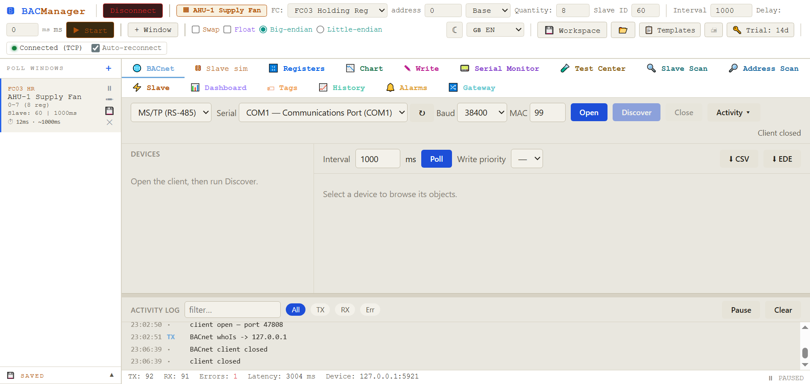
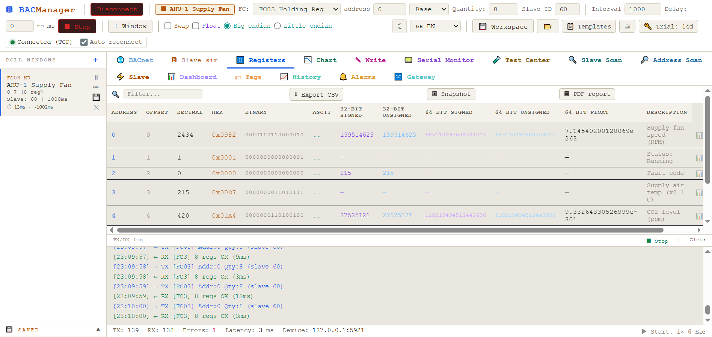

BACnet has no single "who's there" broadcast that every tool answers the same way, and MS/TP segments hide behind serial ports no IP scanner can see. BACManager sends a real whoIs across BACnet/IP and MS/TP, reaches devices behind routers with BBMD, and lets you browse, read and write every object it finds — then poll the site's Modbus meters from the same window.
Windows 10/11 · BACnet/IP + MS/TP · one-time license · 14-day trial
Unlike a network with DHCP and DNS, a BACnet device does not announce itself until asked — and MS/TP devices sit on a serial line no IP tool will ever see.
On a new site, or one whose drawings are years out of date, the first job is finding what is actually there: which device IDs answer, what they are named, and whether they speak BACnet/IP or sit on an MS/TP segment behind a serial adapter. A whoIs broadcast answers the IP side. The MS/TP side needs a real master-node implementation on RS-485. And a device behind a router needs a BBMD to relay the broadcast at all. BACManager does all three from one panel — and since the same window also polls Modbus RTU/TCP meters and drives, you are not switching tools when the site turns out to be mixed, which most are.
Leave the target empty for a broadcast whoIs across the local segment, or type an IP for a directed request that reaches a specific device — useful when broadcasts are filtered. Every device that answers with an I-Am appears in the list with its device ID, name, address and vendor.
Broadcasts don't cross routers on their own. Register with a BBMD on the remote subnet and BACManager's whoIs reaches devices there too, exactly as a real BMS front-end would see them — no VPN trick, no second NIC.

Most BACnet tools only speak BACnet/IP. The field devices — VAV boxes, room controllers, thermostats — are often MS/TP only.
BACManager includes a full MS/TP master-node implementation: it joins the token ring, answers Poll-For-Master, and reads and writes confirmed requests like a native device. Point a USB-RS485 adapter at the segment, pick the baud rate (9.6k–115k) and a free MAC address, and Discover works exactly as it does over IP. More on MS/TP setup →
Discovery is the first step. What you do with a found device is where the real time gets saved.
Full object list of any device, grouped by type. Read and write any property, not just present-value — including priority arrays for commandable points.
Subscribe to Change-of-Value and watch values update live without polling, exactly as a real BMS front-end would receive them.
Export a device's full object list as BACnet EDE 2.3 — importable by other BACnet tools — or as CSV for a commissioning record.
Once the BACnet side is mapped, the energy meters and drives on the same site usually turn out to be Modbus.

Download the free trial and run Discover against your own site — no credit card, no cloud.
Windows 10/11 · $149 one-time
We use Google Analytics cookies to see how the site is used. You can accept or decline — declining keeps analytics off.